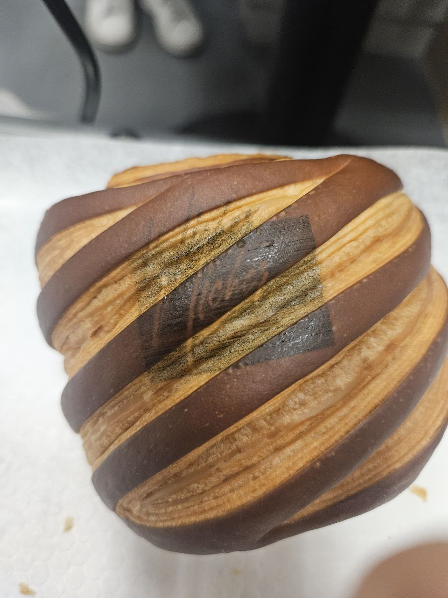

The E.A.S.Y system is an automated machine for printing on pastries with food-safe ink. It stands out because it can handle an entire tray of pastries at once. No need to load each item individually like other food printers (e.g., Eddie Macaron printer).
It allows for varying pastries and their orientation in a tray, expanding its applicability. The user can also change what is being printed with the Evebot app.
The process starts with placing a tray of croissants under the machine. The Pixy2 camera scans the tray to determine the exact location of each croissant. This information is sent to the control system, which then directs the X carriage to move the Evebot pen over each croissant, printing precise and consistent decorations.
The technical detailing can be found below:
This timeline outlines the key steps in the system's fabrication process. Due to the volatile nature of the project and the need to adapt to new problems and challenges, the development involved multiple iterations, with steps being revisited and refined several times, rather than being followed in a strictly linear sequence.
Utilizing the Make Buy Reuse principle to manage costs effectively. Ensured all necessary parts were bought, reused or made to fit budget constraints.
Work was divided efficiently among team members to implement components concurrently under a tight 2-week schedule.
Integration of various components and verifying if they can perform the expected functionality.
Testing the overall functionality of the system, if something is wrong we repeat the process and iterate.
We visited a bakery we had previously ordered croissants from and successfully interviewed Melvin, the sole baker at Nichers Artisanal Bakery.
For lesser-known bakeries like Nichers, branding is crucial to promote the business and visibility to customers. Catering is also essential to keep the business afloat. Melvin found the following 2 functionalities of our system desirable:
After interviewing the stakeholder, we learned that a key thing he is looking for is legible branding on his pastries. So to validate our system we got endorsement from Melvin as he was quite satisfied with the print.
